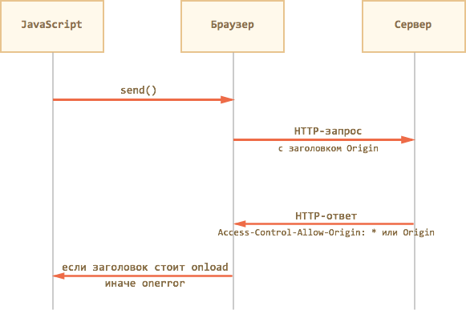
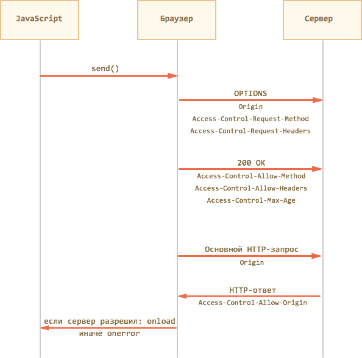

Обычно запрос XMLHttpRequest может делать запрос только в рамках текущего сайта. При попытке использовать другой домен/порт/протокол — браузер выдаёт ошибку.
Существует современный стандарт XMLHttpRequest, он ещё в состоянии черновика, но предусматривает кросс-доменные запросы и многое другое.
Большинство возможностей этого стандарта уже поддерживаются всеми браузерами, но увы, не в IE9-.
Впрочем, частично кросс-доменные запросы поддерживаются, начиная с IE8, только вместо XMLHttpRequest нужно использовать объект XDomainRequest.
Кросс-доменные запросы
Разберём кросс-доменные запросы на примере кода:
// (1)
var XHR = ("onload" in new XMLHttpRequest()) ? XMLHttpRequest : XDomainRequest;
var xhr = new XHR();
// (2) запрос на другой домен :)
xhr.open('GET', 'http://anywhere.com/request', true);
xhr.onload = function() {
alert( this.responseText );
}
xhr.onerror = function() {
alert( 'Ошибка ' + this.status );
}
xhr.send();
Контроль безопасности
Кросс-доменные запросы проходят специальный контроль безопасности, цель которого — не дать злым хакерам™ завоевать интернет.
Серьёзно. Разработчики стандарта предусмотрели все заслоны, чтобы «злой хакер» не смог, воспользовавшись новым стандартом, сделать что-то принципиально отличное от того, что и так мог раньше и, таким образом, «сломать» не ожидающий этого старый сервер.
Давайте, на минуточку, вообразим, что появился стандарт, который даёт, без ограничений, возможность делать любой странице HTTP-запросы куда угодно, какие угодно.
Как сможет этим воспользоваться злой хакер?
Он сделает свой сайт, например http://evilhacker.com и заманит туда посетителя (а может посетитель попадёт на «злонамеренную» страницу и по ошибке — не так важно).
Когда посетитель зайдёт на http://evilhacker.com, он автоматически запустит JS-скрипт на странице. Этот скрипт сможет бы сделать HTTP-запрос на почтовый сервер, к примеру, http://gmail.com. А ведь обычно HTTP-запросы идут с куками посетителя и другими авторизующими заголовками.
Поэтому хакер смог бы написать на http://evilhacker.com код, который, сделав GET-запрос на http://gmail.com, получит информацию из почтового ящика посетителя. Проанализирует её, сделает ещё пачку POST-запросов для отправку писем от имени посетителя. Затем настанет очередь онлайн-банка и так далее.
Спецификация CORS налагает специальные ограничения на запросы, которые призваны не допустить подобного апокалипсиса.
Запросы в ней делятся на два вида.
Простыми считаются запросы, если они удовлетворяют следующим двум условиям:
«Непростыми» считаются все остальные, например, запрос с методом PUT или с заголовком Authorization не подходит под ограничения выше.
Принципиальная разница между ними заключается в том, что «простой» запрос можно сформировать и отправить на сервер и без XMLHttpRequest, например при помощи HTML-формы.
То есть, злой хакер на странице http://evilhacker.com и до появления CORS мог отправить произвольный GET-запрос куда угодно. Например, если создать и добавить в документ элемент <script src="любой url">, то браузер сделает GET-запрос на этот URL.
Аналогично, злой хакер и ранее мог на своей странице объявить и, при помощи JavaScript, отправить HTML-форму с методом GET/POST и кодировкой multipart/form-data. А значит, даже старый сервер наверняка предусматривает возможность таких атак и умеет от них защищаться.
А вот запросы с нестандартными заголовками или с методом DELETE таким образом не создать. Поэтому старый сервер может быть к ним не готов. Или, к примеру, он может полагать, что такие запросы веб-страница в принципе не умеет присылать, значит они пришли из привелигированного приложения, и дать им слишком много прав.
Поэтому при посылке «непростых» запросов нужно специальным образом спросить у сервера, согласен ли он в принципе на подобные кросс-доменные запросы или нет? И, если сервер не ответит, что согласен — значит, нет.
В спецификации CORS, как мы увидим далее, есть много деталей, но все они объединены единым принципом: новые возможности доступны только с явного согласия сервера (по умолчанию — нет).
CORS для простых запросов
В кросс-доменный запрос браузер автоматически добавляет заголовок Origin, содержащий домен, с которого осуществлён запрос.
В случае запроса на http://anywhere.com/request с http://javascript.ru/page заголовки будут примерно такие:
GET /request
Host:anywhere.com
Origin:http://javascript.ru
...
Сервер должен, со своей стороны, ответить специальными заголовками, разрешает ли он такой запрос к себе.
Если сервер разрешает кросс-доменный запрос с этого домена — он должен добавить к ответу заголовок Access-Control-Allow-Origin, содержащий домен запроса (в данном случае «javascript.ru») или звёздочку *.
Только при наличии такого заголовка в ответе — браузер сочтёт запрос успешным, а иначе JavaScript получит ошибку.

То есть, ответ сервера может быть примерно таким:
HTTP/1.1 200 OK
Content-Type:text/html; charset=UTF-8
Access-Control-Allow-Origin: http://javascript.ru
Если Access-Control-Allow-Origin нет, то браузер считает, что разрешение не получено, и завершает запрос с ошибкой.
При таких запросах не передаются куки и заголовки HTTP-авторизации. Параметры user и password в методе open игнорируются. Мы рассмотрим, как разрешить их передачу, чуть далее.
Что может сделать хакер, используя такие запросы?
Описанные выше ограничения приводят к тому, что запрос полностью безопасен.
Действительно, злая страница может сформировать любой GET/POST-запрос и отправить его, но без разрешения сервера ответа она не получит.
А без ответа такой запрос, по сути, эквивалентен отправке формы GET/POST, причём без авторизации.
Ограничения IE9-
В IE9- используется XDomainRequest, который представляет собой урезанный XMLHttpRequest.
На него действуют ограничения:
Современный стандарт XMLHttpRequest предусматривает средства для преодоления этих ограничений, но на момент выхода IE8 они ещё не были проработаны, поэтому их не реализовали. А IE9 исправил некоторые ошибки, но в общем не добавил ничего нового.
Поэтому на сайтах, которые хотят поддерживать IE9-, то на практике кросс-доменные запросы редко используют, предпочитая другие способы кросс-доменной коммуникации. Например, динамически создаваемый тег SCRIPT или вспомогательный IFRAME с другого домена. Мы разберём эти подходы в последующих главах.
Как разрешить кросс-доменные запросы от доверенного сайта в IE9-?
Разрешить кросс-доменные запросы для «доверенных» сайтов можно в настройках IE, во вкладке «Безопасность», включив пункт «Доступ к источникам данных за пределами домена».
Обычно это делается для зоны «Надёжные узлы», после чего в неё вносится доверенный сайт. Теперь он может делать кросс-доменные запросы XMLHttpRequest.
Этот способ можно применить для корпоративных сайтов, а также в тех случаях, когда посетитель заведомо вам доверяет, но почему-то (компьютер на работе, админ запрещает ставить другой браузер?) хочет использовать именно IE. Например, он может предлагаться в качестве дополнительной инструкции «как заставить этот сервис работать под IE».
В IE разрешён другой порт
В кросс-доменные ограничения IE не включён порт.
То есть, можно сделать запрос с http://javascript.ru на http://javascript.ru:8080, и в IE он не будет считаться кросс-доменным.
Это позволяет решить некоторые задачи, связанные с взаимодействием различных сервисов в рамках одного сайта. Но только для IE.
Расширенные возможности, описанные далее, поддерживаются всеми современными браузерами, кроме IE9-.
Заголовки ответа
Чтобы JavaScript мог прочитать HTTP-заголовок ответа, сервер должен указать его имя в Access-Control-Expose-Headers.
Например:
HTTP/1.1 200 OK
Content-Type:text/html; charset=UTF-8
Access-Control-Allow-Origin: http://javascript.ru
X-Uid: 123
X-Authorization: 2c9de507f2c54aa1
Access-Control-Expose-Headers: X-Uid, X-Authentication
По умолчанию скрипт может прочитать из ответа только «простые» заголовки:
Cache-Control
Content-Language
Content-Type
Expires
Last-Modified
Pragma
…То есть, Content-Type получить всегда можно, а доступ к специфическим заголовкам нужно открывать явно.
Запросы от имени пользователя
По умолчанию браузер не передаёт с запросом куки и авторизующие заголовки.
Чтобы браузер передал вместе с запросом куки и HTTP-авторизацию, нужно поставить запросу xhr.withCredentials = true:
var xhr = new XMLHttpRequest();
xhr.withCredentials = true;
xhr.open('POST', 'http://anywhere.com/request', true)
...
Далее — всё как обычно, дополнительных действий со стороны клиента не требуется.
Такой XMLHttpRequest с куками, естественно, требует от сервера больше разрешений, чем «анонимный».
Поэтому для запросов с withCredentials предусмотрено дополнительное подтверждение со стороны сервера.
При запросе с withCredentials сервер должен вернуть уже не один, а два заголовка:
Пример заголовков:
HTTP/1.1 200 OK
Content-Type:text/html; charset=UTF-8
Access-Control-Allow-Origin: http://javascript.ru
Access-Control-Allow-Credentials: true
Использование звёздочки * в Access-Control-Allow-Origin при этом запрещено.
Если этих заголовков не будет, то браузер не даст JavaScript'у доступ к ответу сервера.
«Непростые» запросы
В кросс-доменном XMLHttpRequest можно указать не только GET/POST, но и любой другой метод, например PUT, DELETE.
Когда-то никто и не думал, что страница сможет сделать такие запросы. Поэтому ряд веб-сервисов написаны в предположении, что «если метод — нестандартный, то это не браузер». Некоторые веб-сервисы даже учитывают это при проверке прав доступа.
Чтобы пресечь любые недопонимания, браузер использует предзапрос в случаях, когда:
…Любое из условий выше ведёт к тому, что браузер cделает два HTTP-запроса.
Первый запрос называется «предзапрос» (английский термин «preflight»). Браузер делает его целиком по своей инициативе, из JavaScript мы о нём ничего не знаем, хотя можем увидеть в инструментах разработчика.
Этот запрос использует метод OPTIONS. Он не содержит тела и содержит название желаемого метода в заголовке Access-Control-Request-Method, а если добавлены особые заголовки, то и их тоже — в Access-Control-Request-Headers.
Его задача — спросить сервер, разрешает ли он использовать выбранный метод и заголовки.
На этот запрос сервер должен ответить статусом 200, без тела ответа, указав заголовки Access-Control-Allow-Method: метод и, при необходимости, Access-Control-Allow-Headers: разрешённые заголовки.
Дополнительно он может указать Access-Control-Max-Age: sec, где sec — количество секунд, на которые нужно закэшировать разрешение. Тогда при последующих вызовах метода браузер уже не будет делать предзапрос.

Давайте рассмотрим предзапрос на конкретном примере.
Пример запроса COPY
Рассмотрим запрос COPY, который используется в протоколе WebDAV для управления файлами через HTTP:
var xhr = new XMLHttpRequest();
xhr.open('COPY', 'http://site.com/~ilya', true);
xhr.setRequestHeader('Destination', 'http://site.com/~ilya.bak');
xhr.onload = ...
xhr.onerror = ...
xhr.send();
Этот запрос «непростой» по двум причинам (достаточно было бы одной из них):
Поэтому браузер, по своей инициативе, шлёт предварительный запрос OPTIONS:
OPTIONS /~ilya HTTP/1.1
Host: site.com
Accept: text/html,application/xhtml+xml,application/xml;q=0.9,*/*;q=0.8
Accept-Encoding: gzip,deflate
Connection: keep-alive
Origin: http://javascript.ru
Access-Control-Request-Method: COPY
Access-Control-Request-Headers: Destination
Обратим внимание на детали:
На этот запрос сервер должен ответить статусом 200, указав заголовки Access-Control-Allow-Method: COPY и Access-Control-Allow-Headers: Destination.
Но в протоколе WebDav разрешены многие методы и заголовки, которые имеет смысл сразу перечислить в ответе:
HTTP/1.1 200 OK
Content-Type: text/plain
Access-Control-Allow-Methods: PROPFIND, PROPPATCH, COPY, MOVE, DELETE, MKCOL, LOCK, UNLOCK, PUT, GETLIB, VERSION-CONTROL, CHECKIN, CHECKOUT, UNCHECKOUT, REPORT, UPDATE, CANCELUPLOAD, HEAD, OPTIONS, GET, POST
Access-Control-Allow-Headers: Overwrite, Destination, Content-Type, Depth, User-Agent, X-File-Size, X-Requested-With, If-Modified-Since, X-File-Name, Cache-Control
Access-Control-Max-Age: 86400
Ответ должен быть без тела, то есть только заголовки.
Браузер видит, что метод COPY — в числе разрешённых и заголовок Destination — тоже, и дальше он шлёт уже основной запрос.
При этом ответ на предзапрос он закэширует на 86400 сек (сутки), так что последующие аналогичные вызовы сразу отправят основной запрос, без OPTIONS.
Основной запрос браузер выполняет уже в «обычном» кросс-доменном режиме:
COPY /~ilya HTTP/1.1
Host: site.com
Content-Type: text/html; charset=UTF-8
Destination: http://site.com/~ilya.bak
Origin: http://javascript.ru
Ответ сервера, согласно спецификации WebDav COPY, может быть примерно таким:
HTTP/1.1 207 Multi-Status
Content-Type: text/xml; charset="utf-8"
Content-Length: ...
Access-Control-Allow-Origin: http://javascript.ru
<?xml version="1.0" encoding="utf-8" ?>
<d:multistatus xmlns:d="DAV:">
...
</d:multistatus>
Так как Access-Control-Allow-Origin содержит правильный домен, то браузер вызовет xhr.onload и запрос будет завершён.
Итого
Порядок выполнения:
Браузер ожидает ответ со статусом 200, без тела, со списком разрешённых методов и заголовков в Access-Control-Allow-Method и Access-Control-Allow-Headers. Дополнительно можно указать Access-Control-Max-Age для кеширования предзапроса.
Для запросов с withCredentials может быть только Origin и дополнительно Access-Control-Allow-Credentials: true.
Детали и примеры мы разобрали выше.